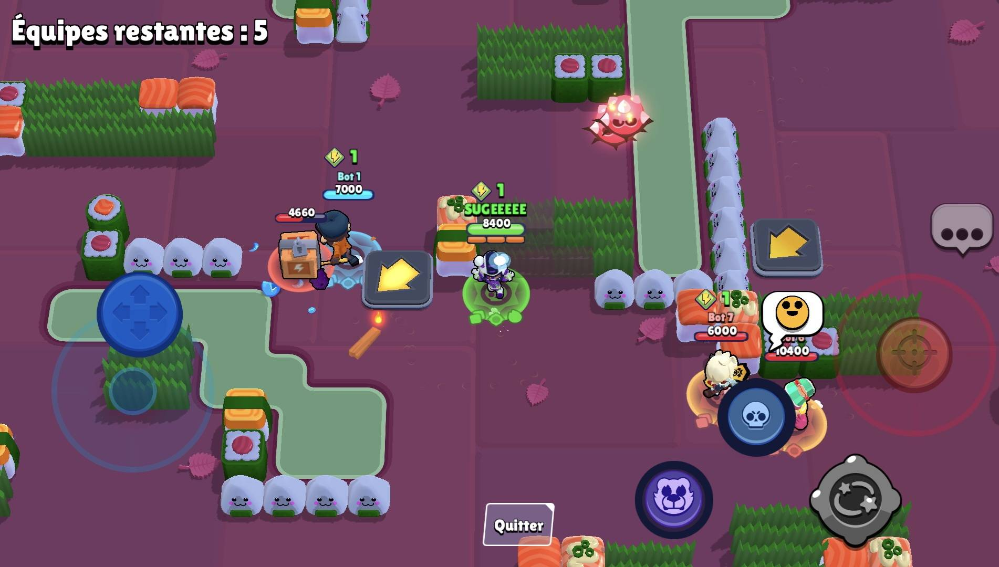

Sur cette page, vous trouverez des explications générales sur les principaux modes de jeu de Brawl Stars. En bas de page, un quiz vous permettra de découvrir quel brawler vous correspond.
Explications détaillées des modes de jeu
Survivant
Survivant est un mode battle royale où jusqu'à dix joueurs s'affrontent en solo (ou en duo pour Survivant Duo). La carte est parsemée de buissons, de murs et de zones ouvertes.
Les joueurs commencent sans cubes de pouvoir et doivent détruire des boites pour récupérer des cubes, augmentant ainsi leurs points de vie et leurs dégâts.
- Objectif principal : être le dernier brawler en vie.
- Mécanismes clés :
- Les buissons offrent des opportunités d'embuscade.
- Les couloirs étroits peuvent être exploités par les brawlers infligeant des dégâts de zone.
- La zone de jeu se réduit progressivement par un gaz mortel qui inflige des dégâts sur la durée, forçant les joueurs à se rapprocher.
- Les cubes de pouvoirs (obtenus en cassant des boites) augmentent la santé et les dégâts du brawler.
Survivant Duo
Survivant Duo est une variante du Survivant où deux joueurs s'associent pour former une équipe face à d'autres duos.
- Objectif principal : être le dernier duo en vie.
- Mécanismes clés :
- Communication et coordination entre les coéquipiers sont déterminantes.
- Certaines combinaisons de brawlers fonctionnent très bien pour capturer les power cubes ensembles.
- Les duos doivent partager les cubes de pouvoirs récoltés, ajoutant un aspect stratégique.

Razzia de Gemmes
Razzia de Gemmes est un mode 3 contre 3 où les équipes doivent collecter et détenir dix gemmes simultanément pendant 15 secondes pour l'emporter. Les gemmes apparaissent au centre de la carte.
- Objectif principal : Avoir dix gemmes en possession de votre équipe pendant 15 secondes consécutives.
- Mécanismes clés :
- La mine centrale est le point focal : contrôler cette zone est nécessaire pour gagner.
- Certains brawlers spécialisés dans le contrôle de zone aident à sécuriser la mine.
- Les brawlers à courte portée doivent surprendre les porteurs de gemmes adverses pour les éliminer rapidement.
- Un excès d'agressivité peut laisser votre équipe sans défense si les adversaires réagissent bien.
Brawl Ball
Brawl Ball est un mode 3 contre 3 inspiré du football. Chaque équipe doit marquer deux buts contre l'adversaire. Le ballon se déplace en courant ou en attaquant (sans viser).
- Objectif principal : marquer deux buts avant l'équipe adverse.
- Mécanismes clés :
- Le ballon se transporte en courant ou en l'attaquant, permettant aux brawlers à longue portée de lancer le ballon plus loin.
- Les brawlers à courte portée et à fort dégât sont efficaces pour foncer dans la défense et marquer rapidement.
- Les brawlers de soutien peuvent soigner leurs alliés pour résister aux assauts.
- Les buissons permettent des attaques surprises : un coéquipier peut surgir derrière la défense pour une passe rapide ou un tir décisif.
Braquage
Braquage est un mode 3 contre 3 où chaque équipe doit attaquer le coffre adverse tout en défendant le sien, protégé par des murs. Le premier à détruire le coffre adverse gagne.
- Objectif principal : détruire le coffre adverse avant que le vôtre ne soit détruit.
- Mécanismes clés :
- Les défenseurs tiennent position derrière les murs pour repousser les attaquants.
- Les attaquants privilégient les brawlers à longue portée capables de percer les murs.
- La gestion de la santé entre attaque et défense est cruciale : trop d'attaquants peuvent laisser le coffre sans défense.
Siege
Siege est un mode 3 contre 3 dans lequel les équipes collectent des vis industrielles tombant périodiquement au centre de la carte. Ces vis servent à construire un robot attaquant.
- Objectif principal : construire un robot et détruire le coffre ennemi avec celui-ci (ou infliger plus de dégâts que l'adversaire avant la fin du temps).
- Mécanismes clés :
- Les vis apparaissent au centre : contrôler cette zone est essentiel.
- Les brawlers capables de détruire rapidement les tourelles facilitent la collecte de vis.
- Les brawlers défensifs aident à protéger votre coffre et à ralentir l'avancée du robot adverse.
- Un équilibre entre attaque et défense est nécessaire : se concentrer trop sur la collecte de vis peut laisser votre coffre vulnérable.